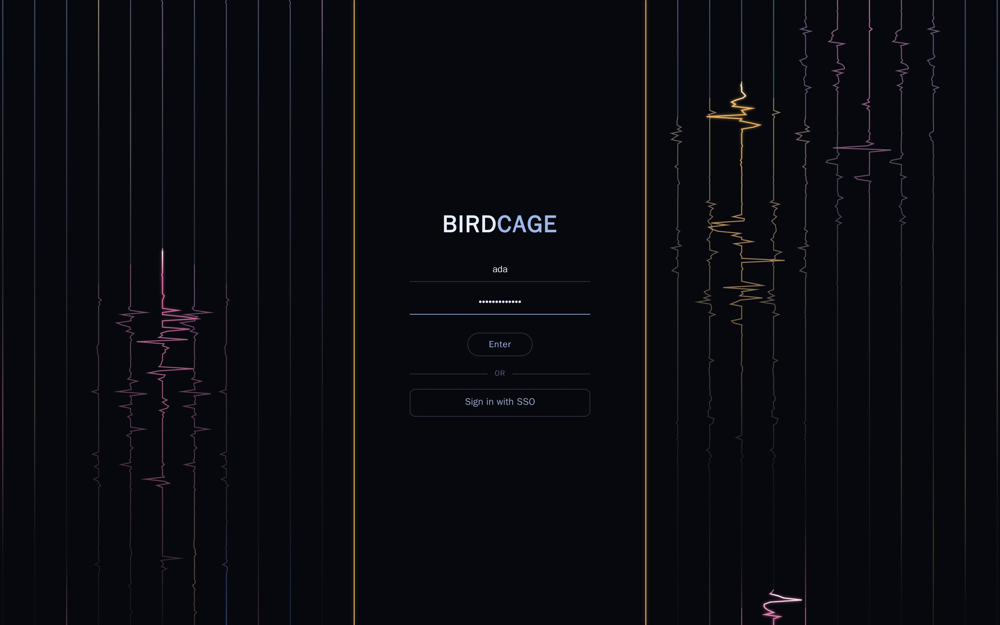
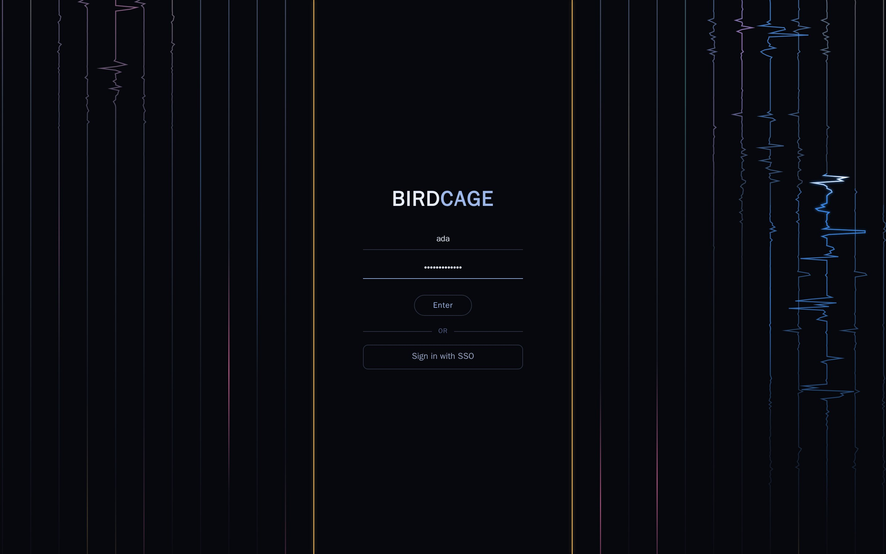
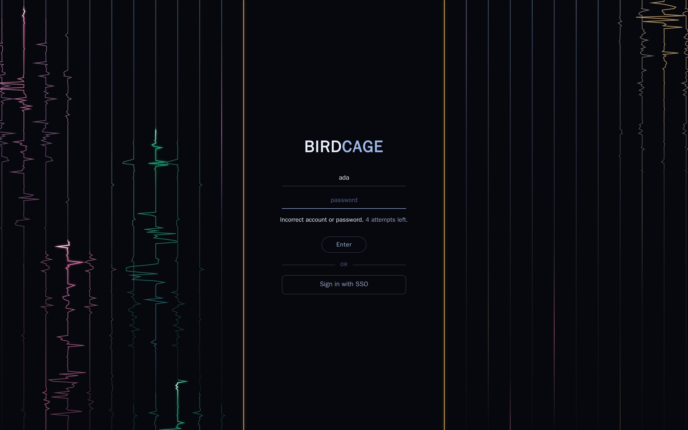
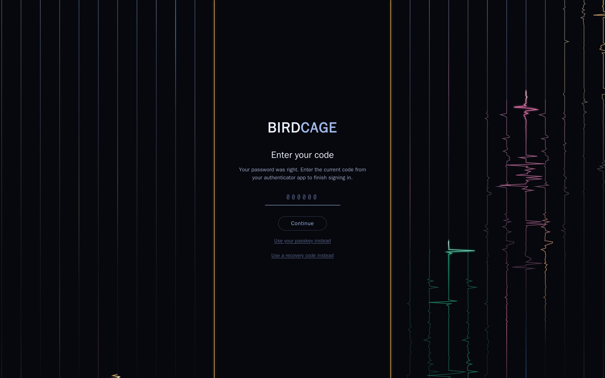

One change from round 16: the trace is bigger and wilder. Most spikes are small, a few reach across the bars next door. The two bars either side of a pulse pick up a fainter trace of their own, in the pulse's colour. The trace flickers while it lasts, and pulses now arrive at uneven intervals, sometimes two close together. Nothing crosses the amber posts into the form. Open the live page.
Shimmer and pulses as before. Only the trace has changed.
Open the live page


